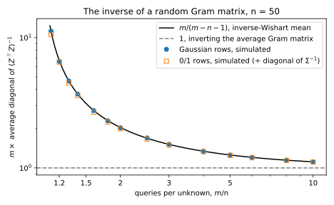
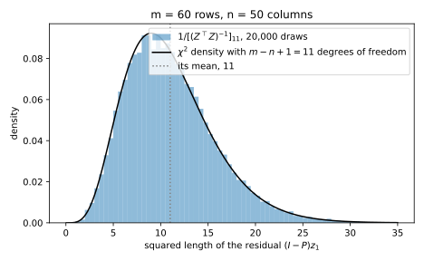
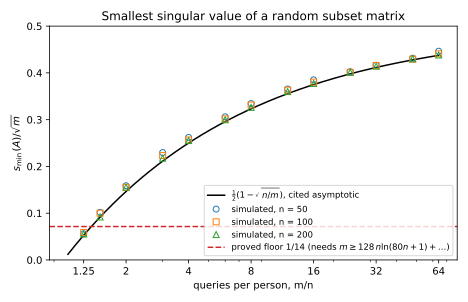
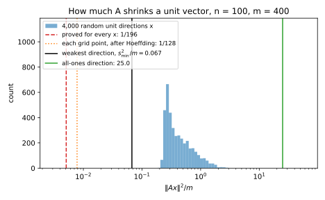
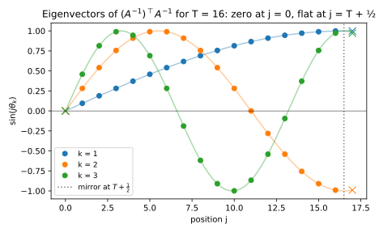
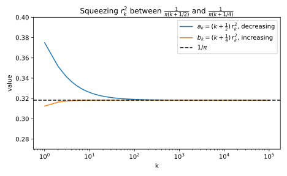
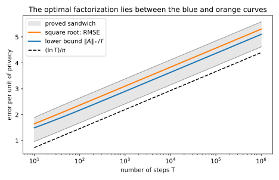
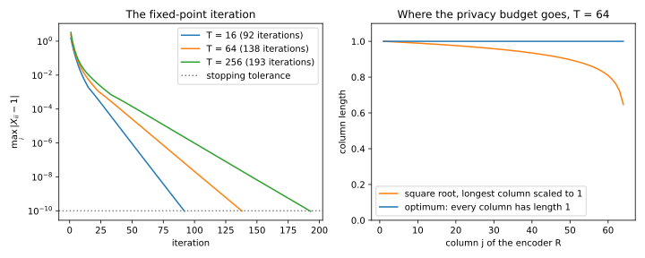
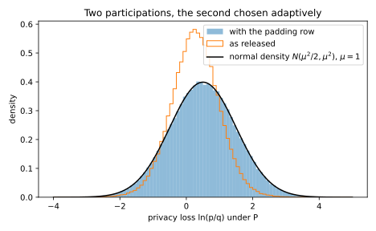

Appendix H — Random matrices and factorizations
Two chapters of the book lean on facts about matrices that they quote rather than prove, and this appendix proves them. Reconstruction attacks decodes noisy answers by least squares, so its error depends on two properties of the random query matrix: the average inverse of its Gram matrix sets the error under random noise, and its smallest singular value sets the error under worst-case noise. The chapter on training with differential privacy (DP) by follow the regularized leader (FTRL), DP-FTRL and matrix factorization, releases the running sums of a training run by splitting the prefix-sum matrix into a product of two matrices. It quotes several facts about this matrix and its factorizations, from its singular values to the form of the best factorization. Each result is about how a matrix stretches or shrinks vectors, and each proof comes down to an eigenvalue, a singular value or a projection.
Both chapters call their matrix \(A\), but it is a different matrix in each. In the first two sections, the query matrix \(A\) has one row for each of \(m\) queries and one column for each of \(n\) people. In the last three, \(A\) is the prefix-sum matrix, with one row and one column for each of \(T\) training steps. Table H.1 lists the results and where each chapter states or uses them.
| Result | Where the chapter states or uses it |
|---|---|
| The average inverse of a Gram matrix with Gaussian rows is \(\Sigma^{-1}/(m - n - 1)\) | Proposition 17.3, step 4 of its proof; Proposition 17.5, step 4 of its proof |
| A random subset matrix has \(s_{\min}(A) \ge \sqrt m/14\) once \(m\) is of order \(n\ln n\) | Section 17.3, the worst-case bound Equation 17.13 (Proposition 17.2) and the paragraph after it |
| The prefix-sum matrix: singular values, trace-norm duality, the square root’s coefficients, how close the square root is to optimal | Theorem 41.2 and its proof; Theorem 41.3, step 5 of its proof, and the comparison with the lower bound in Section 41.4 |
| The optimal factorization for the root-mean-square error | Theorem 41.4 |
| Lower-triangular factors lose nothing; several adaptive participations | Theorem 41.1, step 3 of its proof and the paragraph after it; Theorem 41.5, step 3 of its proof |
H.1 The average inverse of a random Gram matrix
H.1.1 What the chapter uses
Let \(Z\) be an \(m \times n\) matrix whose \(m\) rows are independent normal vectors with mean 0 and covariance matrix \(\Sigma\). Then \(Z^\top Z\), the Gram matrix of inner products between the columns, is called a Wishart matrix, and, as long as \(m \ge n + 2\), \[\mathbb E\big[(Z^\top Z)^{-1}\big] = \frac{\Sigma^{-1}}{m - n - 1}. \tag{H.1}\] Step 4 of the proof of Proposition 17.3 cites this to Muirhead (1982, ch. 3) for the error of least squares under random noise, and applies it as an approximation to random 0/1 query rows \(q\), with \(\Sigma = \mathbb E[qq^\top]\). Section 17.5 reuses it in its step 4, for Equation 17.23.
H.1.2 The idea
Start with one column, \(n = 1\). Then \(Z^\top Z\) is the sum of \(m\) squared standard normal values, whose average is \(m\), but the average of its inverse is not \(1/m\). An average of inverses is always larger than the inverse of the average, because small values blow up under \(1/x\) much more than large values shrink. For example, a number that is 1 or 3 with equal chance has average 2, while the average of its inverses is \(\frac12(1 + \frac13) = \frac23\), not \(\frac12\). For the sum of \(m\) squared normals the exact answer is \(1/(m - 2)\), which is the formula with \(n = 1\).
H.1.3 Derivation
The proof first uses symmetry to show that the average inverse is a multiple of the identity (steps 1 to 3). One diagonal entry of the inverse is one over the squared residual of regressing one column on the others (step 4), and with Gaussian columns that residual is a sum of \(m - n + 1\) squared normals (step 5), whose inverse has a known average (step 6). Take \(\Sigma = I\) first, so that the entries of \(Z\) are independent standard normal numbers, and write \(W = Z^\top Z\) and \(z_1, \dots, z_n\) for the columns of \(Z\).
- The inverse exists. With \(m \ge n\) Gaussian rows, the columns are linearly independent with probability 1. Add the columns one at a time. Given the earlier ones, their span is a fixed subspace of lower dimension, and a column with a continuous distribution lands in it with probability 0. So \(W\) is invertible. (The stronger condition \(m \ge n + 2\) is needed only in step 6, to make the average finite.)
- Off-diagonal entries average to 0. Flip the sign of column \(i\) of \(Z\). The flipped matrix has the same distribution, because a standard normal entry and its negative have the same distribution. Flipping column \(i\) flips the sign of every inner product between column \(i\) and another column, so it flips row \(i\) and column \(i\) of \(W\), except the diagonal entry. The inverse changes in the same way, since the flip is multiplication by a diagonal matrix \(\Lambda\) of signs on both sides, and \((\Lambda W \Lambda)^{-1} = \Lambda W^{-1} \Lambda\). So every entry of \(W^{-1}\) in row \(i\), off the diagonal, has the same average as its negative, and that average, which is finite by steps 4 to 6 and the Cauchy–Schwarz inequality, is 0.
- Diagonal entries share one average. Swapping columns \(i\) and \(k\) also leaves the distribution unchanged, and it swaps the diagonal entries \(i\) and \(k\) of \(W^{-1}\). So all diagonal entries have the same average \(c\), and \(\mathbb E[W^{-1}] = cI\).
- A diagonal entry is one over a residual. Let \(P\) be the orthogonal projection onto the span of \(z_2, \dots, z_n\), so that \((I - P)z_1\) is the part of \(z_1\) that the other columns cannot explain. Let \(w\) be the first column of \(W^{-1}\), so \(Ww = e_1\), where \(e_1 = (1, 0, \dots, 0)\). Set \(u = Zw\), a vector of length \(m\). Then \(Z^\top u = Z^\top Zw = Ww = e_1\), and this equation says two things: \(u\) is orthogonal to \(z_2, \dots, z_n\), and \(z_1^\top u = 1\). Now \(u = w_1z_1 + (\text{a combination of } z_2, \dots, z_n)\). Applying \(I - P\) removes the combination and leaves \(u\) unchanged, since \(u\) is orthogonal to the other columns, so \(u = w_1(I - P)z_1\). Substituting this into \(z_1^\top u = 1\) gives \(w_1\|(I - P)z_1\|^2 = 1\), because \(z_1^\top(I - P)z_1 = \|(I - P)z_1\|^2\) for a projection. So \[\big[W^{-1}\big]_{11} = \frac{1}{\|(I - P)z_1\|^2}. \tag{H.2}\]
- The residual is a sum of \(m - n + 1\) squared normals. Fix the other columns. Then \(I - P\) is a fixed projection onto a subspace of dimension \(k = m - n + 1\), the \(m\) dimensions minus the \(n - 1\) spanned by \(z_2, \dots, z_n\). The column \(z_1\) is independent of the others, and a standard normal vector keeps its distribution under any rotation, because its density depends only on the length of the vector. So rotate the coordinates until the subspace is spanned by the first \(k\) axes. In the new coordinates \(z_1\) is still standard normal, and \(\|(I - P)z_1\|^2\) is the sum of the squares of its first \(k\) coordinates, a chi-squared variable \(\chi^2_k\) with \(k\) degrees of freedom. This holds for every value of the other columns, so it holds without conditioning too.
- The average of \(1/\chi^2_k\). Write \(1/x\) as an integral of exponentials, \(1/x = \int_0^\infty e^{-tx}\,dt\) for \(x > 0\), because exponentials of a sum of independent squares are easy to average. For one standard normal number \(g\) and a number \(t \ge 0\), \[\mathbb E\big[e^{-tg^2}\big] = (1 + 2t)^{-1/2}, \tag{H.3}\] because \(e^{-tg^2}\) times the normal density is a normal density with variance \(1/(1 + 2t)\), missing only its normalizing factor. A \(\chi^2_k\) variable \(X\) is a sum of \(k\) independent such squares, so the averages multiply and \(\mathbb E[e^{-tX}] = (1 + 2t)^{-k/2}\). Everything is positive, so the average and the integral can be exchanged, and \[\mathbb E\Big[\frac1X\Big] = \int_0^\infty(1 + 2t)^{-k/2}\,dt = \frac{1}{k - 2} \quad\text{for } k \ge 3. \tag{H.4}\] The integral converges only when \(k/2 > 1\). Putting in \(k = m - n + 1\) gives \(c = 1/(m - n - 1)\), and the condition \(k \ge 3\) becomes \(m \ge n + 2\).
- General covariance. Write \(\Sigma^{1/2}\) for the symmetric square root of \(\Sigma\), the matrix whose square is \(\Sigma\). A normal row with covariance \(\Sigma\) can be written as a standard normal row times \(\Sigma^{1/2}\), so \(Z = Z_0\Sigma^{1/2}\) with \(Z_0\) standard. Then \(Z^\top Z = \Sigma^{1/2}Z_0^\top Z_0\Sigma^{1/2}\), and its inverse is \(\Sigma^{-1/2}(Z_0^\top Z_0)^{-1}\Sigma^{-1/2}\). Averaging, with the fixed matrices taken outside the average, and using steps 3 and 6 gives Equation H.1.
H.1.4 Checking it
The script averages \(m\) times the diagonal of \((Z^\top Z)^{-1}\) over 4,000 draws of matrices with \(n = 50\) columns, for which the formula predicts \(m/(m - n - 1)\). It also draws 0/1 matrices, as in the chapter, whose second-moment matrix is \(\Sigma = \frac14(I + \mathbf 1\mathbf 1^\top)\), and divides by the diagonal \(4n/(n + 1)\) of \(\Sigma^{-1}\) computed in Section 17.3, step 3, which puts both kinds of rows on the same scale. Table H.2 shows the result.
| Rows \(m\) | 60 | 100 | 200 | 400 |
|---|---|---|---|---|
| Predicted, \(m/(m - n - 1)\) | 6.667 | 2.041 | 1.342 | 1.146 |
| Gaussian rows, simulated | 6.661 | 2.041 | 1.342 | 1.146 |
| 0/1 rows, simulated and rescaled | 6.456 | 2.000 | 1.329 | 1.140 |
The Gaussian rows match the formula within the simulation noise. The 0/1 rows fall about 3% below it at \(m = 60\), and by less as \(m\) grows, so for subset queries the chapter’s approximation is slightly pessimistic. Figure H.1 shows the same comparison over a range of \(m\). The gap between the curve \(m/(m - n - 1)\) and the naive line at 1 is the correction that step 4 of the chapter makes, and it is large only when \(m\) is close to \(n\).

Steps 4 and 5 can be checked one at a time. For one Gaussian matrix with \(m = 60\) rows, the squared residual of the first column on the others and one over the first diagonal entry of the inverse are both 4.931982, as Equation H.2 says. Figure H.2 repeats this for 20,000 matrices against the \(\chi^2\) density with \(m - n + 1 = 11\) degrees of freedom. The symmetry of steps 2 and 3 also shows: with \(n = 10\), \(m = 30\) and 20,000 draws, the off-diagonal entries of the average inverse are 0.0013 of the diagonal for Gaussian rows. For 0/1 rows the ratio is 0.1000, because 0/1 entries have a nonzero mean and flipping a column’s sign is no longer a symmetry. That is still the shape the approximation predicts, since \(\Sigma^{-1}\) is proportional to \(I - \frac{1}{n + 1}\mathbf 1\mathbf 1^\top\), whose off-diagonal entries are \(\frac1n = 0.1\) times its diagonal ones.

H.1.5 What it does not cover
The proof needs Gaussian rows in two places: step 2 needs each column to keep its distribution when its sign flips, and step 5 needs rotation invariance. Rows of 0/1 entries have neither property, which is why the chapter calls the formula an approximation and checks the attack by simulation. A 0/1 matrix is also singular with a small but positive probability, for example when two columns happen to be equal, so the average of its inverse is not even defined. The rescaled values in Table H.2 are averages over draws that happened to be invertible, which at these sizes is every draw. The condition \(m \ge n + 2\) is needed too. At \(m = n + 1\) the residual is a \(\chi^2_2\) variable, which puts so much probability near 0 that its inverse has an infinite average.
H.2 A random subset matrix shrinks no direction much
H.2.1 What the chapter uses
The worst-case bound Equation 17.13 of Section 17.3 says that least squares gets at most \(4mE^2/s_{\min}(A)^2\) bits wrong when every answer has error at most \(E\), where the smallest singular value \(s_{\min}(A)\) is the smallest length \(\|Ax\|\) over unit vectors \(x\). Let \(A\) be an \(m \times n\) matrix whose rows are independent uniformly random subsets \(q_1, \dots, q_m\), so each entry is an independent fair 0 or 1. For a failure probability \(\beta\), \[s_{\min}(A) \ge \frac{\sqrt m}{14} \quad\text{with probability at least } 1 - \beta, \quad\text{once}\quad m \ge 128\Big(n\ln(80n + 1) + \ln\frac1\beta\Big). \tag{H.5}\] So with \(m = O(n\log n)\) queries, error \(E = o(\sqrt n)\) leaves \(o(n)\) wrong bits. The chapter cites Vershynin (High-Dimensional Probability, ch. 4) and a heuristic for the sharper \(s_{\min}(A) \approx \frac12(\sqrt m - \sqrt n)\), which this section does not prove.
H.2.2 The idea
Table H.3 lists how a lemma about one query becomes a bound on the smallest singular value. The lemma, from the chapter’s linear-programming section Section 17.2, says that one random query catches any fixed direction \(x\) with probability at least \(\frac3{16}\). Over \(m\) queries, Hoeffding’s inequality makes it nearly certain that a good share of the queries catch \(x\). To handle all directions at once, the proof rounds every unit vector to a point of a fine grid, applies the union bound over the grid, and pays for the rounding with a crude bound on how much \(A\) can stretch the small difference.
| Move | What it gives | Holds |
|---|---|---|
| Lemma, one query | \(\langle q, x\rangle^2 > \|x\|^2/16\) | with probability \(\ge \frac3{16}\), for each fixed \(x\) |
| Hoeffding, \(m\) queries | more than \(m/8\) such queries, so \(\|Ax\|^2 > m\|x\|^2/128\) | except with probability \(e^{-m/128}\), for each fixed \(x\) |
| Union bound over the grid | the same for every grid point | except with probability \((80n + 1)^ne^{-m/128}\) |
| Rounding | \(\|Ax\| \ge \sqrt m/14\) for every unit \(x\) | whenever the previous row holds |
H.2.3 Derivation
- One query catches a fixed direction. This is the chapter’s lemma, whose proof holds for every vector \(x\) (the chapter adds an assumption about large coordinates only afterwards). Fix a nonzero \(x\) with \(n\) coordinates, and write a random subset as \(q_i = (1 + s_i)/2\) with independent fair signs \(s_i\), so that a person is in the subset when the sign is \(+1\). The answer \(Y = \langle q, x\rangle\) is then the constant \(\frac12\sum_ix_i\) plus the sum \(\frac12\sum_is_ix_i\) of terms with random signs. Write \(\tau\) for the standard deviation of that sum, so \(\tau^2 = \frac14\|x\|^2\). Counting which terms survive in the expansion of the fourth power shows that a random-sign sum has fourth moment at most 3 times its squared variance, as for a normal variable, and the chapter’s step 3 shows that adding the constant keeps \(\mathbb E Y^4 \le 3(\mathbb E Y^2)^2\). The Paley–Zygmund inequality (Equation 17.5) says that a non-negative variable \(W\) exceeds \(\xi\,\mathbb E W\) with probability at least \((1 - \xi)^2(\mathbb E W)^2/\mathbb E[W^2]\), for any level \(\xi\) between 0 and 1. Applied to \(W = Y^2\), the ratio of moments is at least \(\frac13\). Finally, \(\mathbb E Y^2\) is \(\tau^2\) plus the squared constant, so it is at least \(\tau^2\), and \[\Pr\big[|Y| > \sqrt\xi\,\tau\big] \ge \frac{(1 - \xi)^2}{3}. \tag{H.6}\] With \(\xi = \frac14\) the bound reads \[\Pr\Big[\langle q, x\rangle^2 > \frac{\|x\|^2}{16}\Big] \ge \frac{3}{16}. \tag{H.7}\] A nonzero mean only pushes \(\langle q, x\rangle\) away from 0, so the all-ones direction, which \(A\) stretches most, needs no special care.
- Many queries catch it, by Hoeffding’s inequality. Call query \(j\) good for \(x\) when \(\langle q_j, x\rangle^2 > \|x\|^2/16\), and let \(N\) be the number of good queries. The queries are independent, so \(N\) is a sum of \(m\) independent 0/1 terms, each 1 with probability \(p \ge \frac3{16}\). Hoeffding’s inequality (Concentration inequalities) says that the average of \(m\) independent terms in \([0, 1]\) falls more than \(t\) below its mean with probability at most \(e^{-2mt^2}\). The event \(N \le m/8\) means the average falls at least \(p - \frac18 \ge \frac1{16}\) below its mean, so with \(t = \frac1{16}\) it has probability at most \(e^{-2m/256} = e^{-m/128}\).
- Many good queries make \(\|Ax\|\) large. \(\|Ax\|^2 = \sum_j\langle q_j, x\rangle^2\) is a sum of non-negative terms, and each good query contributes more than \(\|x\|^2/16\). If \(N > m/8\), then \(\|Ax\|^2 > \frac m8\cdot\frac{\|x\|^2}{16} = \frac{m\|x\|^2}{128}\).
- A finite grid. Every unit vector has its coordinates in \([-1, 1]\). Take the grid of points in \([-1, 1]^n\) whose coordinates are multiples of \(h = 1/(40n)\). Each coordinate takes \(2/h + 1 = 80n + 1\) values, so there are \((80n + 1)^n\) grid points. Rounding each coordinate of a unit vector \(x\) to the nearest multiple of \(h\) gives a grid point \(y\) with \(|x_i - y_i| \le h/2\), so \(\|x - y\| \le \frac h2\sqrt n = \frac{1}{80\sqrt n}\), and hence \(\|y\| \ge 1 - \frac{1}{80\sqrt n}\).
- Union bound over the grid. By steps 2 and 3, each nonzero grid point fails \(\|Ay\|^2 > m\|y\|^2/128\) with probability at most \(e^{-m/128}\), and the point 0 does not matter, because no unit vector is rounded to it. The union bound says that the chance that at least one of several events happens is at most the sum of their chances. So every grid point satisfies it except with probability at most \((80n + 1)^ne^{-m/128}\). Taking logarithms, this is at most \(\beta\) exactly when \(m \ge 128\big(n\ln(80n + 1) + \ln(1/\beta)\big)\), the condition of Equation H.5.
- A crude bound on stretching. Every entry of \(A\) is 0 or 1, so each query has at most \(n\) ones and \(\|q_j\|^2 \le n\). By the Cauchy–Schwarz inequality, \(\|Av\|^2 = \sum_j\langle q_j, v\rangle^2 \le \sum_j\|q_j\|^2\|v\|^2 \le mn\|v\|^2\). So \(A\) stretches any vector by at most \(\sqrt{mn}\).
- From the grid to every unit vector. Outside the bad event of step 5, take any unit vector \(x\) and its grid point \(y\). By the triangle inequality and steps 3 to 6, \[\|Ax\| \ge \|Ay\| - \|A(x - y)\| \ge \sqrt{\frac{m}{128}}\Big(1 - \frac1{80\sqrt n}\Big) - \sqrt{mn}\cdot\frac{1}{80\sqrt n}. \tag{H.8}\] The right side equals \(\sqrt m\) times \(\frac{1}{\sqrt{128}} - \frac{1}{80}\big(1 + \frac{1}{\sqrt{128n}}\big)\), which grows with \(n\). So it is smallest at \(n = 1\), where it is \(\sqrt m\,\big(\frac{79}{80\sqrt{128}} - \frac1{80}\big) = 0.0748\sqrt m\), which is more than \(\sqrt m/14 = 0.0714\sqrt m\). The smallest \(\|Ax\|\) over unit vectors is \(s_{\min}(A)\), which gives Equation H.5.
- The consequence for least squares. Substituting \(s_{\min}(A)^2 \ge m/196\) into Equation 17.13 bounds the number of wrong bits by \(4mE^2/(m/196) = 784E^2\). If \(E = o(\sqrt n)\), then \(E^2 = o(n)\), so the wrong bits are \(o(n)\).
H.2.4 Checking it
The proof is far from tight. Figure H.3 plots the simulated \(s_{\min}(A)/\sqrt m\) against \(m/n\) for \(n = 50\), 100 and 200. It falls below the proved floor of \(1/14\) only at \(m = 1.25n\), and from about \(m = 4n\) on it sits on the cited asymptotic \(\frac12(1 - \sqrt{n/m})\). At the chapter’s size, \(n = 500\) and \(m = 2000\), the script finds \(s_{\min}(A) = 0.2558\sqrt m\), against the asymptotic \(0.25\sqrt m\). The price of the proof is the number of queries it asks for: for \(n = 100\) people and \(\beta = 0.01\), Equation H.5 asks for 115,627 queries, about 1,156 per person, while the simulation shows the floor holding from \(m = 1.5n\) on.

Figure H.4 shows where the slack comes from. For one matrix with \(n = 100\) and \(m = 400\), random unit directions have \(\|Ax\|^2/m\) between about 0.2 and 3, the weakest direction is lower, and the all-ones direction is about a hundred times higher. The proof’s levels, \(\frac1{128}\) for a grid point and \(\frac1{196}\) for every direction, are well below all of them. The lemma has slack too: no random direction of the 4,000 has fewer than 0.5550 good queries, while the lemma guarantees only \(\frac3{16} = 0.1875\).

H.2.5 What it does not cover
The proof gives \(m = O(n\log n)\), not \(m = 4n\). The logarithm comes from the union bound over a grid fine enough to absorb the crude stretching bound of step 6. For matrices whose entries have mean 0, called centred, a sharper argument bounds the stretching by about \(\sqrt m + \sqrt n\), so it can use a much coarser grid of directions (a net), and it needs only \(m = O(n)\) (Vershynin, ch. 4). The sharp constant, \(s_{\min} \approx \frac12(\sqrt m - \sqrt n)\), is the Bai–Yin law for matrices with independent centred entries (Bai and Yin 1993). Subset matrices differ from \(\frac12\) times a random-sign matrix by the rank-one matrix \(\frac12\mathbf 1\mathbf 1^\top\), so turning the law into a proof for them takes a perturbation argument for the all-ones direction, which stays cited. So the chapter’s statement with \(m = 4n\) rests on the cited asymptotics and on its simulation, while the \(O(n\log n)\) version is proved here.
H.3 The prefix-sum matrix
H.3.1 What the chapter uses
In DP-FTRL and matrix factorization, \(A\) is the \(T \times T\) prefix-sum matrix: lower-triangular, with every entry on and below the diagonal equal to 1, so that row \(t\) of \(Ax\) is the running sum \(x_1 + \dots + x_t\). A factorization \(A = LR\) releases \(L(Rx + z)\), where \(z\) is Gaussian noise. Its sensitivity \(\Delta_2 R\) is the largest length of a column of \(R\), and its error per unit of privacy at step \(t\) is \(e_t = \Delta_2 R\,\|\ell_t\|\), with \(\ell_t\) the \(t\)-th row of \(L\). The root-mean-square error (RMSE) is \(\big(\frac1T\sum_te_t^2\big)^{1/2}\), and the trace norm \(\|A\|_*\) is the sum of the singular values. The proof of Theorem 41.2 uses the duality \[\operatorname{tr}(U^\top A) \le \|A\|_* \quad\text{for every } U \text{ whose largest singular value is at most } 1, \tag{H.9}\] and the singular values, with \(\omega_k = (2k - 1)\pi/(2T + 1)\), \[\sigma_k(A) = \frac{1}{2\sin\frac{(2k - 1)\pi}{4T + 2}} = \frac{1}{2\sin(\omega_k/2)}, \qquad k = 1, \dots, T. \tag{H.10}\] Step 5 of the proof of Theorem 41.3 bounds the sensitivity of the square-root factorization, whose \(k\)-th diagonal holds \(r_k = \binom{2k}{k}4^{-k}\) (the chapter writes them \(c_k\)), with the Wallis-type inequality of Fichtenberger, Henzinger and Upadhyay (2023) \[\frac{1}{\pi(k + \frac12)} \le r_k^2 \le \frac{1}{\pi(k + \frac14)}. \tag{H.11}\] The chapter states the first two facts without proof and checks the third numerically, and it finds the square root within 9% and 6% of the lower bound \(\|A\|_*/T\) of Equation 41.9 at \(T = 100\) and \(T = 10{,}000\). This section proves the three facts, and it explains the comparison by proving that the ratio tends to 1: \[\frac{\ln(2T + 1)}{\pi} \le \frac{\|A\|_*}{T} \le \text{RMSE of any factorization}, \qquad \text{RMSE of the square root} \le 1 + \frac{0.8 + \ln\frac{4T - 3}{5}}{\pi}. \tag{H.12}\]
H.3.2 The idea
The singular values of \(A\) are hard to see directly, but its inverse is simple. Taking running sums is undone by taking differences, so \(A^{-1}\) has 1 on the diagonal and \(-1\) just below it. Then \((A^{-1})^\top A^{-1}\) is the matrix of a second difference, \(-v_{j-1} + 2v_j - v_{j+1}\), the same matrix that describes a vibrating string, whose eigenvectors are sine waves. For \(T = 2\) the whole computation fits in a few lines: \[A^{-1} = \begin{pmatrix}1 & 0\\ -1 & 1\end{pmatrix}, \qquad (A^{-1})^\top A^{-1} = \begin{pmatrix}2 & -1\\ -1 & 1\end{pmatrix}. \tag{H.13}\] The eigenvalues of the second matrix are \((3 \pm \sqrt5)/2\), that is 2.618 and 0.382, which the formula proved below gives as \(4\sin^2(3\pi/10)\) and \(4\sin^2(\pi/10)\). The singular values of \(A\) are one over their square roots, the golden ratio 1.618 and its inverse 0.618.
H.3.3 Derivation
The singular values.
- The inverse. Write \(N\) for the matrix with ones just below the diagonal and zeros elsewhere, so that \(Nx = (0, x_1, \dots, x_{T-1})\) shifts a vector down by one. Taking the differences \(x_t - x_{t-1}\) of running sums gives back the \(x_t\), so \(A^{-1} = I - N\).
- The product. \((A^{-1})^\top A^{-1} = (I - N^\top)(I - N) = I - N - N^\top + N^\top N\). The matrix \(N^\top N\) is diagonal with entries \(1, \dots, 1, 0\), because \(N\) maps the last basis vector to 0 and every other basis vector to the next one. So the product \(M = (A^{-1})^\top A^{-1}\) is tridiagonal, with \(-1\) next to the diagonal and \(2\) on the diagonal, except for a 1 in the bottom-right corner.
- Interior rows. Try \(v_j = \sin(j\omega)\) for \(j = 1, \dots, T\). Row \(j\) of \(Mv\), for \(1 < j < T\), is \(-v_{j-1} + 2v_j - v_{j+1}\). The identity \(\sin((j - 1)\omega) + \sin((j + 1)\omega) = 2\cos\omega\sin(j\omega)\) turns this into \((2 - 2\cos\omega)v_j = 4\sin^2(\omega/2)\,v_j\). So \(\nu = 4\sin^2(\omega/2)\) is the eigenvalue, if the first and last rows agree.
- The first row. Row 1 is \(2v_1 - v_2\), which is the interior formula with \(v_0 = 0\). The sine satisfies \(\sin(0) = 0\), so row 1 holds for every \(\omega\).
- The last row. Row \(T\) is \(-v_{T-1} + v_T\), which is the interior formula with \(v_{T+1} = v_T\). So the sine must take the same value at \(T\) and \(T + 1\), which means it must be symmetric about \(T + \frac12\), a peak or a trough there. That requires \((T + \frac12)\omega\) to be an odd multiple of \(\frac\pi2\), that is, \(\omega_k = (2k - 1)\pi/(2T + 1)\). The values \(k = 1, \dots, T\) give \(T\) different angles in \((0, \pi)\), where \(\sin^2(\omega/2)\) increases, hence \(T\) different eigenvalues, which is all of them.
- Back to \(A\). The eigenvalues of \(M = (AA^\top)^{-1}\) are the squares of the singular values of \(A^{-1}\), which are one over the singular values of \(A\). So \(\sigma_k(A) = 1/\sqrt{4\sin^2(\omega_k/2)} = 1/(2\sin(\omega_k/2))\), which is Equation H.10, largest at \(k = 1\).
The duality. The singular value decomposition writes \(A = \sum_k\sigma_ku_kv_k^\top\), with orthonormal \(u_k\) and orthonormal \(v_k\), so each piece maps one input direction \(v_k\) to one output direction \(u_k\). Since \(\operatorname{tr}(U^\top u_kv_k^\top) = v_k^\top U^\top u_k = \langle Uv_k, u_k\rangle\), linearity of the trace gives \[\operatorname{tr}(U^\top A) = \sum_k\sigma_k\langle Uv_k, u_k\rangle. \tag{H.14}\] By the Cauchy–Schwarz inequality each term is at most \(\sigma_k\|Uv_k\|\,\|u_k\|\), and \(\|Uv_k\| \le 1\) because \(U\) stretches no vector and \(v_k\) has length 1. So the sum is at most \(\sum_k\sigma_k = \|A\|_*\), which is Equation H.9. Equality holds for \(U = \sum_ku_kv_k^\top\), which maps each \(v_k\) exactly onto \(u_k\).
The Wallis bounds. The plan is to build two sequences from \(r_k^2\), one decreasing and one increasing, that close in on the same limit \(1/\pi\), so that each stays on its side.
- Two integrals. Let \(I_n = \int_0^{\pi/2}\sin^nx\,dx\). Integrating by parts gives \(I_n = \frac{n - 1}{n}I_{n-2}\), and \(I_0 = \frac\pi2\), \(I_1 = 1\). The square root’s coefficients satisfy \(r_k = r_{k-1}\frac{2k - 1}{2k}\) (Equation 41.13), so unrolling the recursion gives \(I_{2k} = \frac\pi2\cdot\frac12\cdot\frac34\cdots\frac{2k - 1}{2k} = \frac\pi2r_k\). In the same way \(I_{2k+1} = \frac23\cdot\frac45\cdots\frac{2k}{2k + 1} = \frac{1}{(2k + 1)r_k}\).
- The lower bound. On \([0, \frac\pi2]\), \(0 \le \sin x \le 1\), so higher powers are smaller and \(I_n\) decreases in \(n\). From \(I_{2k+1} \le I_{2k}\) you get \(\frac{1}{(2k + 1)r_k} \le \frac\pi2r_k\), that is, \(r_k^2 \ge \frac{2}{\pi(2k + 1)} = \frac{1}{\pi(k + \frac12)}\).
- A first upper bound, and the limit. In the same way, \(I_{2k} \le I_{2k-1} = \frac{1}{2kr_k}\) gives \(r_k^2 \le \frac{1}{\pi k}\) for \(k \ge 1\). Together with step 2, \(k\,r_k^2\) is squeezed between \(\frac{k}{\pi(k + 1/2)}\) and \(\frac1\pi\), so it tends to \(\frac1\pi\). This is Wallis’s product in disguise.
- Two monotone sequences. Let \(a_k = (k + \frac12)r_k^2\) and \(b_k = (k + \frac14)r_k^2\). Both tend to \(\frac1\pi\) by step 3. Using \(r_{k+1}/r_k = (2k + 1)/(2k + 2)\), \[\frac{a_{k+1}}{a_k} = \frac{(2k + 3)(2k + 1)}{(2k + 2)^2} = \frac{4k^2 + 8k + 3}{4k^2 + 8k + 4} < 1, \qquad \frac{b_{k+1}}{b_k} = \frac{(4k + 5)(2k + 1)^2}{(4k + 1)(2k + 2)^2} = \frac{16k^3 + 36k^2 + 24k + 5}{16k^3 + 36k^2 + 24k + 4} > 1. \tag{H.15}\] So \(a_k\) decreases and \(b_k\) increases.
- Conclude. A decreasing sequence stays above its limit, so \(a_k \ge \frac1\pi\), which is the lower bound of Equation H.11 again. An increasing sequence stays below its limit, so \(b_k \le \frac1\pi\), which is the upper bound. Both hold for every \(k \ge 0\).
How close the square root is to optimal.
- A floor under every factorization. For \(0 < x \le \frac\pi2\), \(\sin x \le x\), so each singular value in Equation H.10 is at least \(\frac{1}{\omega_k} = \frac{2T + 1}{(2k - 1)\pi}\). The function \(\frac1{2x - 1}\) decreases, so each term \(\frac1{2k - 1}\) is at least its integral from \(k\) to \(k + 1\). Adding these up, and then dividing the sum of the singular values by \(T\), \[\sum_{k=1}^T\frac1{2k - 1} \ge \frac12\ln(2T + 1), \qquad \frac{\|A\|_*}T \ge \frac{2T + 1}{2\pi T}\ln(2T + 1) \ge \frac{\ln(2T + 1)}{\pi}. \tag{H.16}\]
- A ceiling over the square root. For the square root, \(L = R\). Row \(t\) holds \(r_{t-1}, \dots, r_0\), so each row of \(L\) is no longer than the last one, whose squared length is \(\sum_{k<T}r_k^2 = (\Delta_2 R)^2\) (step 4 of the proof of Theorem 41.3). So every \(e_t \le (\Delta_2 R)^2\), and the RMSE, an average of the \(e_t^2\) under a square root, is at most the largest \(e_t\). That is \(\sum_{k<T}r_k^2\), which Equation 41.14 bounds by \(1 + (0.8 + \ln\frac{4T - 3}5)/\pi\), now with the Wallis bounds proved.
- The ratio tends to 1. By Equation 41.9, the optimal RMSE lies between \(\|A\|_*/T\) and the square root’s RMSE, so all three lie in the band of Equation H.12. Both ends of the band are \((\ln T)/\pi\) plus a constant, so the square root’s RMSE divided by the lower bound tends to 1 as \(T\) grows, like \(1 + O(1/\ln T)\).
H.3.4 Checking it
At \(T = 256\), Equation H.10 matches a numerical singular value decomposition to a relative gap of \(2.7 \times 10^{-15}\). Figure H.5 draws the first three eigenvectors for \(T = 16\), each 0 just before position 1 and flat across the mirror at \(T + \frac12\), which is how steps 4 and 5 select the angles. For the duality at \(T = 16\), the trace norm is 26.0552. The largest \(\operatorname{tr}(U^\top A)\) over 2,000 random matrices \(U\), each scaled so that its largest singular value is 1, is 4.9448, and the aligned choice \(U = \sum_ku_kv_k^\top\) attains the trace norm. The script checks the two ratio inequalities of the Wallis bounds in exact integer arithmetic for every \(k < 10^6\), and Equation H.11 itself in floating point for every \(k < 10^4\). Figure H.6 shows the two sequences closing in on \(\frac1\pi\) from either side.


Table H.4 gives the band of Equation H.12 and the two curves inside it. The chapter’s “within 9% and 6%” are the ratios 1.089 and 1.056, and the ratio keeps falling slowly, to 1.040 at \(T = 10^6\), as the \(1 + O(1/\ln T)\) of step 3 predicts. The proved band is wide, because both \(\sin x \le x\) and the bound of each row by the last one give away a constant: at \(T = 100\) the ceiling divided by the floor is 1.568. Figure H.7 shows the band and both curves from \(T = 10\) to \(10^6\).
| \(T\) | Floor \(\frac{\ln(2T + 1)}\pi\) | Lower bound \(\frac{\|A\|_*}T\) | Square root RMSE | Ratio | Ceiling | \(\frac{\ln T}\pi\) |
|---|---|---|---|---|---|---|
| 100 | 1.688 | 2.178 | 2.371 | 1.089 | 2.647 | 1.466 |
| 10,000 | 3.152 | 3.634 | 3.836 | 1.056 | 4.115 | 2.932 |
| 1,000,000 | 4.618 | 5.100 | 5.302 | 1.040 | 5.581 | 4.398 |

H.3.5 What it does not cover
The chapter also quotes the finer approximation \(\sum_{k<T}r_k^2 \approx (\ln T + \gamma + 4\ln2)/\pi\), with \(\gamma\) Euler’s constant. It follows from a longer expansion of \(r_k^2\) in powers of \(1/k\), and it stays unproved here, as in the chapter. The ratio of step 3 tends to 1 only slowly, so the square root is nearly optimal for the RMSE, not optimal at any finite \(T\). The next section finds the optimum.
H.4 The optimal factorization for the root-mean-square error
H.4.1 What the chapter uses
Scaling the encoder \(R\) up and the decoder \(L\) down by the same factor changes nothing, so Theorem 41.4 fixes \(\Delta_2 R \le 1\) and minimizes the Frobenius norm \(\|L\|_F\), the square root of the sum of the squared entries of \(L\). The RMSE per unit of privacy is then \(\|L\|_F/\sqrt T\). A matrix is positive definite when it is symmetric and \(x^\top Xx > 0\) for every nonzero \(x\), and \(Y^{1/2}\) is the positive definite square root of such a \(Y\). With \(X = R^\top R\), the matrix of inner products of the columns of \(R\), the problem is \[\text{minimize } \operatorname{tr}(A^\top AX^{-1}) \quad\text{over positive definite } X \text{ with } X_{ii} \le 1 \text{ for every } i, \tag{H.17}\] it is convex, and its solution is \[X = V^{-1/2}\big(V^{1/2}A^\top AV^{1/2}\big)^{1/2}V^{-1/2}, \qquad v = \operatorname{diag}\Big(\big(V^{1/2}A^\top AV^{1/2}\big)^{1/2}\Big), \tag{H.18}\] where \(V\) is the diagonal matrix of the vector \(v\), so that \(v\) is a fixed point of the map on the right. The chapter cites Denisov et al. (2022, Theorem 3.2), sketches the Lagrangian step and iterates the map.
H.4.2 The idea
The smallest case shows the answer. At \(T = 2\), \(A^\top A\) has rows \((2, 1)\) and \((1, 1)\). A feasible \(X\) with both columns of length 1 has rows \((1, \rho)\) and \((\rho, 1)\), and the objective is \((3 - 2\rho)/(1 - \rho^2)\). Setting its derivative to zero gives \(\rho^2 - 3\rho + 1 = 0\), so \(\rho = (3 - \sqrt5)/2 = 0.382\) and the minimum is \(2.618\), the golden ratio squared. Table H.5 compares it with the other factorizations at \(T = 2\).
| Factorization | \((\Delta_2 R)^2\) | \(\|L\|_F^2\) | RMSE |
|---|---|---|---|
| Independent noise, \(R = I\) | 1 | 3 | 1.2247 |
| Square root, \(r = (1, \frac12)\) | 1.25 | 2.25 | 1.1859 |
| Optimum, \(\rho = 0.382\) | 1 | 2.618 | 1.1441 |
| Lower bound \(\|A\|_*/T = \sqrt5/2\) | 1.1180 |
H.4.3 Derivation
The proof finds the best decoder for a given encoder, which turns the problem into one about \(X\) alone (step 1). The objective is convex in \(X\) (step 2), so the optimum is the point where its gradient is balanced by a price on each column-length constraint (steps 3 to 5). Write \(B = A^\top A\), which is positive definite because \(A\) is invertible.
- The best decoder for a given encoder. The encoder \(R\) has some number of rows and \(T\) columns. The equation \(LR = A\) can only hold if \(R\) has rank \(T\), because \(A\) has rank \(T\), and then \(X = R^\top R\) is positive definite. Let \(R^+ = X^{-1}R^\top\), so that \(R^+R = I\), and let \(\Pi = RR^+\), the orthogonal projection onto the column space of \(R\). Any decoder with \(LR = A\) satisfies \(L\Pi = LRR^+ = AR^+\). Split \(L = L\Pi + L(I - \Pi)\). Each row of \(L\Pi\) lies in the column space of \(R\) and each row of \(L(I - \Pi)\) is orthogonal to it, so the squared lengths add, and \(\|L\|_F^2 = \|AR^+\|_F^2 + \|L(I - \Pi)\|_F^2 \ge \|AR^+\|_F^2\), with equality for \(L = AR^+\). Since \(R^+(R^+)^\top = X^{-1}R^\top RX^{-1} = X^{-1}\), and the trace does not change when a product is rotated, \[\|AR^+\|_F^2 = \operatorname{tr}\big(AR^+(R^+)^\top A^\top\big) = \operatorname{tr}\big(AX^{-1}A^\top\big) = \operatorname{tr}(BX^{-1}). \tag{H.19}\] So the problem over \((L, R)\) is Equation H.17 over \(X\).
- The objective is convex. Take positive definite \(X\), a symmetric direction \(H\), and \(X(t) = X + tH\). Differentiating \(X(t)X(t)^{-1} = I\) gives \(\frac{d}{dt}X^{-1} = -X^{-1}HX^{-1}\), and differentiating again gives \(2X^{-1}HX^{-1}HX^{-1}\). So the second derivative of \(f(t) = \operatorname{tr}(BX(t)^{-1})\) at \(t = 0\) is \[f''(0) = 2\operatorname{tr}\big(X^{-1}BX^{-1}\cdot HX^{-1}H\big). \tag{H.20}\] Both \(X^{-1}BX^{-1}\) and \(HX^{-1}H\) are positive semidefinite, and the trace of a product of two positive semidefinite matrices is at least 0, because \(\operatorname{tr}(GH) = \operatorname{tr}(G^{1/2}HG^{1/2})\) is a sum of non-negative diagonal entries. So \(f\) bends upward along every line. The positive definite matrices form a convex set, and the constraints \(X_{ii} \le 1\) are linear, so the problem is convex.
- The balance condition. Give each constraint a price \(\kappa_i \ge 0\) and let \(K\) be the diagonal matrix of the prices. The gradient of \(\operatorname{tr}(BX^{-1})\) with respect to \(X\) is \(-X^{-1}BX^{-1}\), by step 2, and that of \(\sum_i\kappa_iX_{ii}\) is \(K\). At an optimum such prices exist, because the constraints are linear, and the two gradients balance: \[X^{-1}BX^{-1} = K, \qquad\text{that is,}\qquad XKX = B. \tag{H.21}\] Since \(B\) is positive definite, so is \(K = X^{-1}BX^{-1}\), so every price is positive. The optimality conditions also require each price times the slack of its constraint, \(\kappa_i(1 - X_{ii})\), to be 0, which is called complementary slackness. So a positive price forces \(X_{ii} = 1\) for every \(i\), and all columns of the optimal encoder have length exactly 1.
- Solving the balance. Multiply Equation H.21 by \(K^{1/2}\) on both sides: \((K^{1/2}XK^{1/2})^2 = K^{1/2}BK^{1/2}\). The matrix \(K^{1/2}XK^{1/2}\) is positive definite, and a positive definite matrix has only one positive definite square root, so \(K^{1/2}XK^{1/2} = (K^{1/2}BK^{1/2})^{1/2}\). That is the first half of Equation H.18 with \(V = K\). Its diagonal entries read \(\kappa_iX_{ii} = \big[(K^{1/2}BK^{1/2})^{1/2}\big]_{ii}\), and with \(X_{ii} = 1\) this is the fixed point \(v = \operatorname{diag}\big((V^{1/2}BV^{1/2})^{1/2}\big)\), the second half.
- A balanced point is the minimum. A convex function lies above its tangent, so for any feasible \(Y\), \[\operatorname{tr}(BY^{-1}) \ge \operatorname{tr}(BX^{-1}) - \operatorname{tr}\big(X^{-1}BX^{-1}(Y - X)\big) = \operatorname{tr}(BX^{-1}) - \sum_i\kappa_i(Y_{ii} - 1) \ge \operatorname{tr}(BX^{-1}), \tag{H.22}\] using Equation H.21, \(X_{ii} = 1\), \(Y_{ii} \le 1\) and \(\kappa_i > 0\). So a fixed point of Equation H.18 gives the optimum.
- The optimum exists, and its value is the sum of the prices. The feasible matrices have entries in \([-1, 1]\), since \(|X_{ij}| \le \sqrt{X_{ii}X_{jj}}\), and the objective grows without bound near a singular \(X\). So the minimum is attained at a positive definite matrix, where step 3 applies. Its value follows from Equation H.21, which gives \(BX^{-1} = XK\): \[\|L\|_F^2 = \operatorname{tr}(BX^{-1}) = \operatorname{tr}(XK) = \sum_iv_i, \qquad \text{RMSE} = \sqrt{\frac1T\sum_iv_i}. \tag{H.23}\]
- A lower-triangular encoder. Any \(R\) with \(R^\top R = X\) gives the same RMSE, and streaming needs a lower-triangular one. Let \(J\) be the matrix that reverses the order of coordinates. The Cholesky factorization writes the positive definite matrix \(JXJ\) as \(GG^\top\) with \(G\) lower-triangular. Then \(R = JG^\top J\) is lower-triangular, because reversing both rows and columns turns the upper-triangular \(G^\top\) into a lower-triangular matrix, and \(R^\top R = JGJJG^\top J = J(JXJ)J = X\). The decoder \(L = AR^{-1}\) is lower-triangular too.
That the iteration \(v \leftarrow \operatorname{diag}\big((V^{1/2}BV^{1/2})^{1/2}\big)\) converges to the fixed point is shown by Denisov et al. (2022), and it stays cited. The script observes it.
H.4.4 Checking it
The script runs the iteration from \(v = \mathbf 1\) with the chapter’s stopping rule, a relative change below \(10^{-10}\). It reproduces the chapter’s counts, 155 iterations at \(T = 100\) and 193 at \(T = 256\), and the RMSE 2.2355 and 2.5244, against 2.3707 and 2.6688 for the square root. At \(T = 64\) it checks every step: the balance condition Equation H.21 holds to \(5.5 \times 10^{-13}\), the diagonal of \(X\) equals 1 to \(8.4 \times 10^{-11}\), the encoder has no nonzero entry above the diagonal, and \(LR = A\) to \(6.7 \times 10^{-16}\). Moving \(X\) in 200 random feasible directions never lowers the objective.
Figure H.8 shows the iteration and what it buys. On the left, \(\max_i|X_{ii} - 1|\) falls geometrically. On the right, the square root spends its privacy unevenly: its first column is the longest and fixes the sensitivity, and its later columns are shorter, so the noise that hides them is larger than they need. The optimum makes every column exactly as long as the first, as step 3 requires.

H.5 Streaming: triangular factors and adaptive participations
H.5.1 What the chapter uses
In DP-FTRL and matrix factorization, each step’s gradient sum is a vector of \(d\) numbers, so \(x\) and the noise \(z\) are matrices with one row per step. One record adds a vector of length at most the clipping norm \(C\) to each step it takes part in, and the noise has standard deviation \(sC\), where \(s\) is the noise scale. The chapter uses two facts about streams. First, if \(A = LR\) with \(L\) of size \(T \times m\) and \(R\) of size \(m \times T\), there are lower-triangular \(T \times T\) matrices \(L'\) and \(R'\) with \[L'R' = A, \qquad L'L'^\top = LL^\top, \qquad \Delta_2 R' \le \Delta_2 R. \tag{H.24}\] So the release \(\hat S = L(Rx + z)\) has the same distribution, which Section 41.2 cites to Denisov et al. (2022, Proposition 2.2). The same inequality holds for the sensitivity of Equation 41.21, when a record takes part at several steps \(\tau_1, \dots, \tau_k\) and contributes \(g_1, \dots, g_k\). That sensitivity is the largest Frobenius norm of the change \(\sum_ir_{\tau_i}g_i^\top\) in the encoder’s output, where \(r_\tau\) is column \(\tau\) of \(R\), over the allowed patterns and all \(g_i\) of length at most \(C\), divided by \(C\). Second, with a lower-triangular \(R\), a fixed participation pattern and that sensitivity, the release is \(\mu\)-Gaussian differential privacy (GDP) with \(\mu = \Delta_2 R/s\), even when each \(g_i\) depends on outputs the record has already influenced. Step 3 of the proof of Theorem 41.5 cites this to Denisov et al. (2022, Theorem 2.1), and this section proves it for Gaussian noise.
Recall what \(\mu\)-GDP means. The neighbouring datasets differ by adding or removing one record. Let \(P\) be the distribution of all the outputs on the dataset \(D\) without the record, and \(Q\) their distribution on \(D' = D \cup \{x\}\). The release is \(\mu\)-GDP when telling \(P\) from \(Q\) is no easier than telling \(\mathcal N(0, 1)\) from \(\mathcal N(\mu, 1)\), whose trade-off curve is \(G_\mu\). By the Neyman–Pearson lemma, how easy that is depends only on the distribution under \(P\) and under \(Q\) of the privacy loss \(L_{D,D'} = \ln(p/q)\), the log of the ratio of the two densities at the output (f-DP and Gaussian DP). It carries its pair of datasets because \(L\) alone is the decoder on this page. For the normal pair the privacy loss is \(\mathcal N(\mu^2/2, \mu^2)\) under \(P\).
H.5.2 The idea
For adaptivity, release the rows of \(Rx + z\) one at a time. Given what has been released so far, each new row is a Gaussian mechanism, and the record shifts its mean by some amount \(\mu_j\), in units of the noise. The shifts depend on the past, but their squares always add up to at most \(\mu^2\). If they added up to exactly \(\mu^2\) on every path, the total privacy loss would be exactly that of a single Gaussian mechanism. To arrange that, imagine one extra output that tops the sum up to \(\mu^2\), and throw it away afterwards, which is post-processing and cannot make privacy worse.
H.5.3 Derivation
Lower-triangular factors. The release depends on the decoder \(L\) only through the covariance \(LL^\top\) of its noise \(Lz\), so the plan is to triangularize \(L\) by Gram–Schmidt and move the orthonormal directions into the encoder, where they cannot lengthen any column.
- The decoder has full rank. \(A\) has rank \(T\) and \(A = LR\), so \(L\) has rank \(T\) and \(m \ge T\).
- Gram–Schmidt on the rows. Orthonormalize the rows \(\ell_1, \dots, \ell_T\) of \(L\) in order, giving orthonormal rows \(o_1, \dots, o_T\), the rows of a \(T \times m\) matrix \(O\) with \(OO^\top = I\). By construction \(\ell_t\) is a combination of \(o_1, \dots, o_t\) only, so \(L = L'O\) with \(L'\) lower-triangular, and invertible because \(L\) has rank \(T\).
- The new encoder. Set \(R' = OR\). Then \(L'R' = L'OR = LR = A\), and \(R' = L'^{-1}A\) is lower-triangular as a product of lower-triangular matrices. The noise covariance is unchanged, because \(L'L'^\top = L'OO^\top L'^\top = LL^\top\). So \(L'z'\), with \(z'\) of size \(T \times d\), has the same distribution as \(Lz\), and the release has the same distribution.
- No more sensitivity. A matrix with orthonormal rows does not lengthen vectors: \(\|Ov\|^2 = \sum_t\langle o_t, v\rangle^2 \le \|v\|^2\), by Bessel’s inequality, because the \(o_t\) are orthonormal. Each column of \(R'\) is \(O\) times the matching column of \(R\), so \(\Delta_2 R' \le \Delta_2 R\). For several participations, the change \(\sum_ir_{\tau_i}g_i^\top\) becomes \(O\sum_ir_{\tau_i}g_i^\top\), whose Frobenius norm is no larger for the same reason. This gives Equation H.24.
Adaptive participations. Take \(R\) lower-triangular of size \(T \times T\), noise \(z\) with independent \(\mathcal N(0, \varsigma^2)\) entries where \(\varsigma = sC\), and release \(Y_j\), row \(j\) of \(Rx + z\), at step \(j\). The record takes part at fixed steps \(\tau_1 < \dots < \tau_k\), and its contribution \(g_i\) at step \(\tau_i\) may depend on \(Y_1, \dots, Y_{\tau_i - 1}\). The other records’ gradients at step \(t\) are functions of \(Y_1, \dots, Y_{t-1}\), the same functions with and without the record.
- Each row is a Gaussian mechanism given the past. Given \(Y_1, \dots, Y_{j-1}\), the mean of \(Y_j\) is the same function of the past under \(P\) and \(Q\), except that under \(Q\) it is shifted by \(\Delta_j = \sum_iR_{j\tau_i}g_i^\top\). Only participations with \(\tau_i \le j\) contribute, because \(R\) is lower-triangular, and their \(g_i\) are already fixed by the past.
- The privacy loss adds up. The density of all outputs is the product of the conditional densities, so the privacy loss is a sum \(L_{D,D'} = \sum_jL_j\) of the privacy losses \(L_j\) of the single rows. For one row, the normal densities give \(L_j = \frac{\|\Delta_j\|^2}{2\varsigma^2} - \frac{\langle\Delta_j, z_j\rangle}{\varsigma^2}\), with \(z_j = Y_j\) minus its mean under \(P\). Under \(P\), given the past, \(z_j\) is normal with independent coordinates, so \(L_j\) is normal with mean \(\mu_j^2/2\) and variance \(\mu_j^2\), where \(\mu_j = \|\Delta_j\|/\varsigma\).
- The shifts are bounded on every path. The squared shifts add up to \(\sum_j\|\Delta_j\|^2 = \|\sum_ir_{\tau_i}g_i^\top\|_F^2\), the change in \(Rx\). The \(g_i\) have length at most \(C\), so this is at most \((\Delta_2 R)^2C^2\) by the definition Equation 41.21, whatever values the \(g_i\) took. Dividing by \(\varsigma^2\), \(\sum_j\mu_j^2 \le \mu^2\) with \(\mu = \Delta_2 R/s\).
- Top up to exactly \(\mu^2\). Add one more output \(Y_{T+1}\), normal with variance 1, whose mean is 0 under \(P\) and \(\mu_{T+1} = \sqrt{\mu^2 - \sum_{j\le T}\mu_j^2}\) under \(Q\). Its shift depends on the past, which is allowed, because the argument below conditions on the past at every row. Now \(\sum_j\mu_j^2 = \mu^2\) exactly on every path. The original release is the padded one with \(Y_{T+1}\) thrown away, so by post-processing it is at least as private.
- The total loss is exactly normal under \(P\). The tool is the moment generating function, the average of \(e^{\lambda L_{D,D'}}\) for a real number \(\lambda\). A normal variable with mean \(a\) and variance \(b\) has \(\mathbb E[e^{\lambda N}] = e^{\lambda a + \lambda^2b/2}\). So, given the past, step 2 gives \[\mathbb E\big[e^{\lambda L_j}\big] = e^{c\mu_j^2}, \qquad c = \frac{\lambda + \lambda^2}{2}. \tag{H.25}\] In other words, the factor \(e^{\lambda L_j - c\mu_j^2}\) has average 1 given the past, whatever \(\mu_j\) the past chose. Multiply these factors over all rows, averaging the last one first, then the one before, and so on. Each average is 1, so the product has average 1. The product is \(e^{\lambda L_{D,D'} - c\sum_j\mu_j^2}\), and \(\sum_j\mu_j^2 = \mu^2\) is a constant on every path, so \[\mathbb E_P\big[e^{\lambda L_{D,D'}}\big] = e^{c\mu^2} = \exp\Big(\lambda\frac{\mu^2}2 + \lambda^2\frac{\mu^2}2\Big). \tag{H.26}\] This is the moment generating function of a normal variable with mean \(\mu^2/2\) and variance \(\mu^2\). A moment generating function that is finite for every \(\lambda\) determines the distribution, so \(L_{D,D'} \sim \mathcal N(\mu^2/2, \mu^2)\) under \(P\). Without the padding, the constant \(\mu^2\) would be the path-dependent \(\sum_j\mu_j^2\), which could not be taken out of the average.
- So is the loss under \(Q\), and the release is \(\mu\)-GDP. The distribution of \(L_{D,D'}\) under \(Q\) follows from that under \(P\), because \(q = e^{-L_{D,D'}}p\): for any set \(S\) of values, \(\Pr_Q[L_{D,D'} \in S] = \mathbb E_P\big[e^{-L_{D,D'}}\,\mathbf 1[L_{D,D'} \in S]\big]\). The single Gaussian mechanism with ratio \(\mu\) has the same law of \(L_{D,D'}\) under its \(P\), hence under its \(Q\) too. By Neyman–Pearson, the two pairs have the same trade-off curve \(G_\mu\). So the padded release is exactly \(\mu\)-GDP, and by step 4 so is the release itself.
H.5.4 Checking it
For the triangular factors, the script starts from the binary tree of Section 41.3 at \(T = 64\), whose encoder has one row for each of its 127 nodes. Gram–Schmidt on the rows of its decoder gives \(64 \times 64\) lower-triangular factors with \(L'R' = A\) and \(L'L'^\top = LL^\top\), both exactly, and the sensitivity stays \(\sqrt 7 = 2.6458\). So 64 noisy numbers can replace the tree’s 127 node sums, with the same distribution of every released prefix sum.
For adaptivity, the script simulates the square-root encoder at \(T = 8\), one coordinate, with \(C = 1\) and \(s = \Delta_2 R\), so that \(\mu = 1\). The record takes part at steps 1 and 5, with \(g_1 = 1\) and \(g_2 = \tanh(Y_4)\), a contribution chosen from an output the record has already influenced. Over a million runs under \(P\), the padded privacy loss has mean 0.4996 and variance 0.9985, against \(\mu^2/2 = 0.5\) and \(\mu^2 = 1\). Without the padding the loss has mean 0.2681 and variance 0.5207, smaller, because \(|g_2| < 1\) keeps the total shift below its worst case. Figure H.9 shows both histograms against the normal density.

H.5.5 What it does not cover
The adaptive proof assumes a square lower-triangular encoder released one row per step, a participation pattern fixed in advance, and Gaussian noise. The binary tree has more rows than steps. It fits after ordering its rows by the step at which each node is complete, and then the same argument applies with several rows released at some steps. Denisov et al. (2022, Theorem 2.1) prove a more general statement, which also covers \((\varepsilon, \delta)\) guarantees and non-Gaussian losses, and that version stays cited.
H.6 Code
The script code/appendix-derivations/apx_matrices.py checks each derivation numerically and draws the figures. For the Wishart mean it simulates Gaussian and 0/1 matrices, checks the regression identity of step 4 and the \(\chi^2\) average of step 6. For the smallest singular value it measures \(s_{\min}\), the share of good queries and the number of queries the proof needs. For the prefix-sum matrix it checks the eigenvectors and singular values, the duality, the monotonicity of \(a_k\) and \(b_k\) for \(k < 10^6\), and the sandwich up to \(T = 10^6\). It also runs the fixed-point iteration, checks every condition of the optimum, and checks the triangular reduction and the adaptive privacy loss. Run it with
uv run python code/appendix-derivations/apx_matrices.pyTable H.6 collects the main numbers it prints with the default seed.
| Check | Result |
|---|---|
| \(m\) times average inverse diagonal, \(n = 50\), \(m = 100\): predicted, Gaussian, 0/1 | 2.041, 2.041, 2.000 |
| \(\mathbb E[1/\chi^2_{11}]\): Monte Carlo against \(1/9\) | 0.1112 against 0.1111 |
| \(s_{\min}(A)/\sqrt m\) at \(n = 500\), \(m = 2000\): simulated, asymptotic, proved | 0.2558, 0.25, 0.0714 |
| Queries the proof needs at \(n = 100\), \(\beta = 0.01\) | 115,627 |
| Closed-form singular values against numerical, \(T = 256\) | \(2.7 \times 10^{-15}\) |
| Square root against lower bound, \(T = 100\) and \(10^4\) | 1.089 and 1.056 |
| Optimal RMSE at \(T = 100\) and 256, iterations | 2.2355 (155), 2.5244 (193) |
| Adaptive privacy loss, padded: mean and variance | 0.4996 and 0.9985 |
Every bound holds, and the simulations agree with the exact statements to within their noise. The two bounds that are far from tight are the smallest-singular-value floor, by a factor of three to six in \(s_{\min}\) and much more in the number of queries, and the band of Equation H.12, which is wide at small \(T\) even though its ratio tends to 1.
H.7 References
- R. J. Muirhead, Aspects of Multivariate Statistical Theory, 1982. Chapter 3 covers the Wishart distribution and the mean of its inverse; the source the chapter cites.
- R. Vershynin, High-Dimensional Probability, 2018. Chapter 4 proves bounds on the singular values of random matrices with nets, the same plan as Section H.2 with sharper constants.
- Z. D. Bai and Y. Q. Yin, “Limit of the smallest eigenvalue of a large dimensional sample covariance matrix”, Annals of Probability, 1993. The sharp constant \(\sqrt m - \sqrt n\) for centred entries.
- S. Denisov, H. B. McMahan, J. Rush, A. Smith and A. Thakurta, 2022, on noisy stochastic gradient descent (SGD): “Improved differential privacy for SGD via optimal private linear operators on adaptive streams”. The optimal factorization (Theorem 3.2), lower-triangular factors (Proposition 2.2) and adaptive streams (Theorem 2.1).
- H. Fichtenberger, M. Henzinger and J. Upadhyay, “Constant matters: fine-grained error bound on differentially private continual observation”, 2023. The square-root factorization and the Wallis-type bounds on its coefficients.
- J. Dong, A. Roth and W. Su, “Gaussian differential privacy”, 2022. Gaussian differential privacy, the Neyman–Pearson view of privacy and composition.